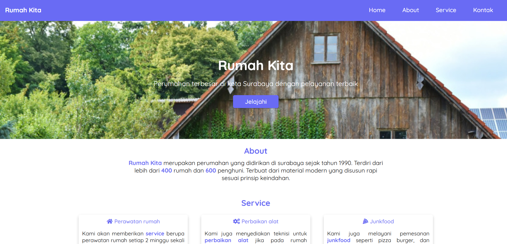
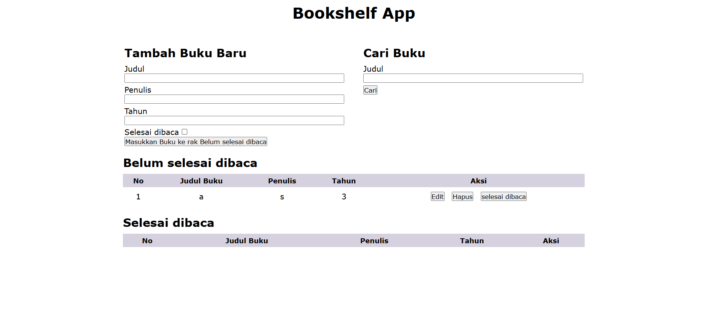
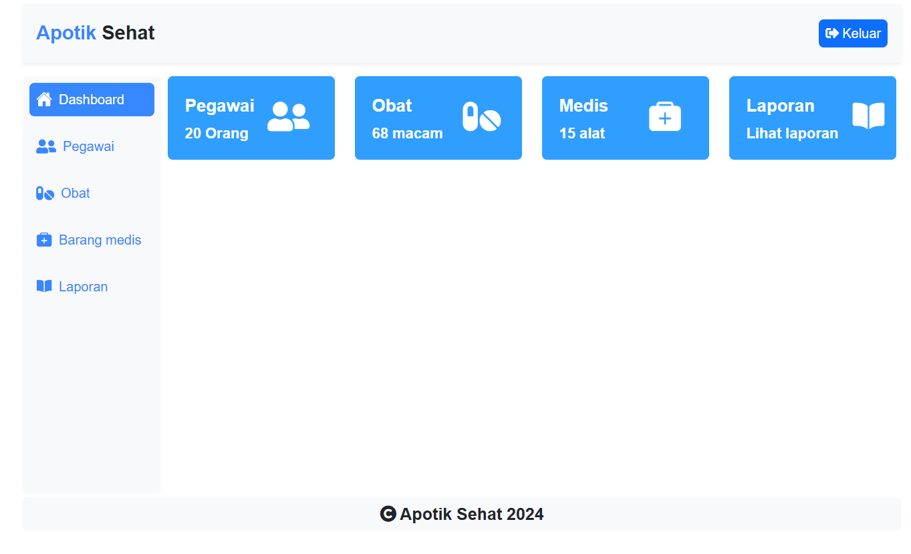

I am a website developer is specialist in Backend
About Me
Saya Cholik, Fresh graduated dari jurusan Informatika Universitas Trunojoyo Madura. Saat ini saya sedang berfokus untuk membangun karir di bidang website khususnya backend developer. Bahasa pemrograman favorit saya adalah PHP
Skills
Penggunaan PHP secara native dan mvc
Penggunaan Python untuk sains data dan website
Penggunaan MySQL untuk pembuatan database
Penggunaan Bootstrap untuk pembuatan interface
Last Project



